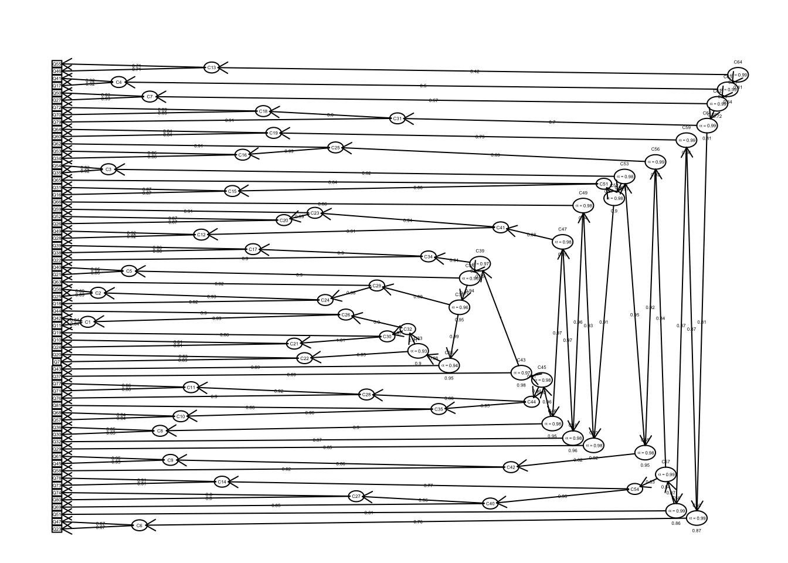

Results
Participant Characteristics
In total, 3,222 individuals responded to the survey. Participants who did not opt out and completed at least 50% of the spiritual abuse item pool were considered complete responders and included in the study (N=3,219). Non-responders included those who responded to less than half of the items (N=3).
Almost all participants (N = 3,064) answered demographics items, and the results are presented Table 1 below. Compared to the general U.S. population, the sample was largely white (86%) and Protestant (57%). The average respondent saw themselves as slightly theologically liberal (M = 4.5, range 1-7). About 4 in 5 identified as straight (82%), and most were raised in a Christian home (87%).
| n | mean | sd | median | trimmed | mad | min | max | range | skew | kurtosis | se | |
|---|---|---|---|---|---|---|---|---|---|---|---|---|
| Age | 3071 | 2.24 | 1.21 | 2 | 2.10 | 1.48 | 1 | 5 | 4 | 0.62 | -0.62 | 0.02 |
| Gender | 3056 | 38.57 | 12.27 | 36 | 37.21 | 10.38 | 16 | 88 | 72 | 0.98 | 0.59 | 0.22 |
| Sexual orientation | 3060 | 1.67 | 0.82 | 2 | 1.59 | 0.00 | 1 | 6 | 5 | 2.67 | 10.78 | 0.01 |
| Race | 3064 | 1.36 | 1.01 | 1 | 1.07 | 0.00 | 1 | 6 | 5 | 3.08 | 9.04 | 0.02 |
| Raised in Christian home | 3060 | 3.08 | 0.79 | 3 | 3.00 | 0.00 | 1 | 7 | 6 | 3.33 | 16.84 | 0.01 |
| Denomination of most abuse | 3061 | 1.09 | 0.28 | 1 | 1.00 | 0.00 | 1 | 2 | 1 | 2.93 | 6.60 | 0.00 |
| Racial makeup of abusive community | 3047 | 5.20 | 3.33 | 5 | 4.69 | 2.96 | 1 | 17 | 16 | 1.47 | 2.19 | 0.06 |
| Racial makeup of abusive group leadership | 3042 | 1.15 | 0.41 | 1 | 1.04 | 0.00 | 1 | 3 | 2 | 2.69 | 6.85 | 0.01 |
| Gender makeup of abusive group leadership | 3044 | 1.09 | 0.35 | 1 | 1.00 | 0.00 | 1 | 3 | 2 | 3.90 | 15.41 | 0.01 |
| Involvement in abusive group | 3048 | 1.82 | 0.79 | 2 | 1.76 | 1.48 | 1 | 5 | 4 | 0.48 | -0.78 | 0.01 |
| Current religious identification | 3054 | 5.54 | 1.99 | 7 | 5.92 | 0.00 | 1 | 7 | 6 | -1.25 | 0.24 | 0.04 |
| Current theological identification | 3057 | 3.24 | 2.96 | 1 | 2.92 | 0.00 | 1 | 8 | 7 | 0.70 | -1.36 | 0.05 |
| Current view of Bible | 2030 | 4.49 | 1.55 | 5 | 4.54 | 1.48 | 1 | 7 | 6 | -0.30 | -0.57 | 0.03 |
| Generation | 3054 | 2.23 | 0.54 | 2 | 2.23 | 0.00 | 1 | 3 | 2 | 0.11 | -0.23 | 0.01 |
| Podcast Use | 3056 | 2.43 | 0.79 | 2 | 2.35 | 0.00 | 1 | 5 | 4 | 0.76 | 0.22 | 0.01 |
Initial Item Analysis
Classical Item Statistics
Table 2 reports classical statistics for the 66 SHAS items. The items are sorted by their mean. Six items are flagged due to extreme values of skew (less than -2 or greater than +2) or kurtosis (less than -7 or greater than +7) and item-total correlations below 0.50. Category response proportions show that most people responded “Never” to these items. These items are important to the extent that they capture the experience of people of color, women, and people who are LGBTQ. But as items they function poorly.
| 1 | 2 | 3 | 4 | 5 | n | mean | sd | skew | kurtosis | Item-total correlation | flag | |
|---|---|---|---|---|---|---|---|---|---|---|---|---|
| EQ46 - Treated as less than because of my skin color | 0.94 | 0.03 | 0.02 | 0.01 | 0.00 | 3211 | 1.11 | 0.48 | 5.15 | 28.93 | 0.16 |
|
| EQ41 - Denied opportunities to serve because of my sexual orientation | 0.89 | 0.02 | 0.03 | 0.02 | 0.03 | 3211 | 1.27 | 0.88 | 3.30 | 9.87 | 0.31 |
|
| EQ17 - Treated as less than b/c my sexual orientation | 0.88 | 0.02 | 0.03 | 0.03 | 0.04 | 3208 | 1.34 | 0.97 | 2.87 | 6.96 | 0.35 |
|
| EQ47 - Medical care being postponed/withheld for religious reasons | 0.70 | 0.17 | 0.09 | 0.02 | 0.01 | 3218 | 1.48 | 0.86 | 1.93 | 3.40 | 0.52 | |
| EQ60 - Encouraged by leader to stay in abusive marriage | 0.76 | 0.09 | 0.07 | 0.05 | 0.02 | 3214 | 1.49 | 0.99 | 2.05 | 3.22 | 0.48 |
|
| EQ55 - Hearing cultural references in sermons unfamiliar to my race/eth. subculture | 0.66 | 0.18 | 0.11 | 0.04 | 0.02 | 3205 | 1.58 | 0.95 | 1.66 | 2.12 | 0.28 |
|
| IQ72 - Feeling as if God harmed me directly | 0.64 | 0.17 | 0.13 | 0.04 | 0.02 | 3070 | 1.64 | 0.99 | 1.52 | 1.55 | 0.54 | |
| IQ81 - Nightmares about my negative religious experiences | 0.56 | 0.21 | 0.15 | 0.06 | 0.02 | 3073 | 1.77 | 1.04 | 1.23 | 0.66 | 0.65 | |
| EQ65 - Cut off/shunned by more religious family members | 0.59 | 0.16 | 0.13 | 0.08 | 0.04 | 3220 | 1.82 | 1.18 | 1.27 | 0.48 | 0.61 | |
| EQ10 - Asked to give up personal goals by pastor | 0.59 | 0.16 | 0.13 | 0.08 | 0.04 | 3220 | 1.83 | 1.18 | 1.25 | 0.44 | 0.64 | |
| EQ26 - Pressured to forgive abuser while abuse was ongoing | 0.60 | 0.14 | 0.11 | 0.09 | 0.06 | 3212 | 1.87 | 1.27 | 1.24 | 0.21 | 0.66 | |
| EQ24 - Expected to consult pastor/leader before making non-religious decisions | 0.56 | 0.16 | 0.16 | 0.08 | 0.04 | 3221 | 1.89 | 1.18 | 1.10 | 0.07 | 0.66 | |
| EQ23 - Prayer replacing needed medical interventions | 0.51 | 0.21 | 0.17 | 0.08 | 0.03 | 3219 | 1.92 | 1.13 | 1.02 | 0.02 | 0.64 | |
| EQ27 - Denied opportunities to serve b/c of my gender | 0.60 | 0.11 | 0.12 | 0.09 | 0.08 | 3217 | 1.94 | 1.35 | 1.14 | -0.13 | 0.48 |
|
| EQ31 - Shunned/ignored by pastor/church/group | 0.46 | 0.22 | 0.18 | 0.09 | 0.05 | 3217 | 2.03 | 1.19 | 0.92 | -0.20 | 0.64 | |
| EQ30 - Deterred from seeking mental health treatment/counseling/medication | 0.50 | 0.17 | 0.17 | 0.11 | 0.05 | 3219 | 2.04 | 1.25 | 0.88 | -0.46 | 0.70 | |
| EQ43 - Shamed by pastor/group for poor spiritual/moral performance | 0.46 | 0.22 | 0.18 | 0.10 | 0.04 | 3217 | 2.04 | 1.18 | 0.86 | -0.31 | 0.73 | |
| IQ68 - Anxiety attacks triggered by religious stimuli | 0.49 | 0.17 | 0.19 | 0.11 | 0.05 | 3073 | 2.06 | 1.23 | 0.83 | -0.51 | 0.68 | |
| EQ52 - Blamed for harm I suffered rather than blaming who harmed me | 0.48 | 0.19 | 0.16 | 0.12 | 0.05 | 3217 | 2.08 | 1.26 | 0.85 | -0.52 | 0.76 | |
| IQ70 - Feeling betrayed by God | 0.42 | 0.24 | 0.21 | 0.09 | 0.05 | 3069 | 2.11 | 1.18 | 0.79 | -0.36 | 0.56 | |
| EQ49 - Leadership/group protecting and elevating abusive individuals | 0.44 | 0.22 | 0.18 | 0.11 | 0.05 | 3213 | 2.12 | 1.23 | 0.79 | -0.50 | 0.72 | |
| EQ16 - Church/community abandoning me in difficult time | 0.45 | 0.21 | 0.17 | 0.11 | 0.06 | 3217 | 2.13 | 1.27 | 0.83 | -0.50 | 0.69 | |
| EQ57 - Developing mental/physical ailments from conforming to group/leader’s expectation | 0.48 | 0.16 | 0.16 | 0.12 | 0.07 | 3219 | 2.15 | 1.33 | 0.78 | -0.70 | 0.72 | |
| EQ20 - Members pressured to give money despite financial hardship | 0.50 | 0.15 | 0.15 | 0.11 | 0.09 | 3217 | 2.16 | 1.39 | 0.82 | -0.71 | 0.68 | |
| EQ62 - Scripture used to justify physical violence | 0.43 | 0.19 | 0.21 | 0.11 | 0.05 | 3220 | 2.16 | 1.24 | 0.69 | -0.67 | 0.65 | |
| EQ59 - Pastor/group blame victim for their abuse | 0.42 | 0.21 | 0.19 | 0.12 | 0.05 | 3217 | 2.16 | 1.23 | 0.70 | -0.65 | 0.76 | |
| EQ21 - Taught I would risk Hell if left my church/group | 0.51 | 0.13 | 0.13 | 0.10 | 0.13 | 3218 | 2.20 | 1.47 | 0.81 | -0.83 | 0.69 | |
| EQ50 - Treated as less than because of my gender | 0.52 | 0.08 | 0.15 | 0.13 | 0.11 | 3219 | 2.23 | 1.47 | 0.70 | -1.04 | 0.54 | |
| IQ82 - Having trouble navigating life outside my church/community | 0.38 | 0.23 | 0.24 | 0.11 | 0.05 | 3071 | 2.24 | 1.21 | 0.62 | -0.62 | 0.61 | |
| EQ64 - Witnessing women pressured to stay in unfaithful/abusive marriages | 0.39 | 0.23 | 0.19 | 0.12 | 0.07 | 3220 | 2.26 | 1.27 | 0.67 | -0.70 | 0.71 | |
| EQ28 - Leadershi/group protecting abusive individuals | 0.37 | 0.24 | 0.19 | 0.13 | 0.06 | 3216 | 2.26 | 1.25 | 0.63 | -0.73 | 0.72 | |
| EQ40 - Threatening Divine punishment to keep group members in line | 0.44 | 0.17 | 0.18 | 0.12 | 0.10 | 3220 | 2.28 | 1.39 | 0.67 | -0.88 | 0.75 | |
| EQ63 - Shamed by pastor/group for raising questions or concerns | 0.36 | 0.23 | 0.22 | 0.13 | 0.06 | 3217 | 2.30 | 1.25 | 0.58 | -0.77 | 0.77 | |
| EQ19 - Behavior excessively monitored by pastor/group | 0.40 | 0.18 | 0.19 | 0.15 | 0.08 | 3219 | 2.32 | 1.33 | 0.56 | -0.96 | 0.75 | |
| EQ51 - Extreme pressure to be pastor/missionary/spiritual leader | 0.41 | 0.19 | 0.17 | 0.14 | 0.10 | 3216 | 2.33 | 1.38 | 0.59 | -0.98 | 0.62 | |
| EQ53 - Scripture used to justify abusive parent-child behavior | 0.39 | 0.19 | 0.20 | 0.14 | 0.09 | 3218 | 2.36 | 1.35 | 0.55 | -0.97 | 0.73 | |
| IQ79 - Distrust of God | 0.33 | 0.23 | 0.24 | 0.12 | 0.08 | 3068 | 2.40 | 1.27 | 0.50 | -0.81 | 0.61 | |
| EQ34 - Scripture used to justify physical punishment/severe discipline | 0.34 | 0.19 | 0.22 | 0.16 | 0.09 | 3219 | 2.46 | 1.33 | 0.42 | -1.05 | 0.65 | |
| EQ29 - Feeling special when in pastor’s good graces; otherwise ignored | 0.34 | 0.19 | 0.22 | 0.16 | 0.09 | 3213 | 2.47 | 1.34 | 0.40 | -1.08 | 0.69 | |
| IQ73 - Self-hatred or self-loathing | 0.31 | 0.21 | 0.24 | 0.15 | 0.09 | 3072 | 2.50 | 1.31 | 0.38 | -1.00 | 0.64 | |
| EQ11 - Disagree w/pastor portrayed as evil | 0.32 | 0.21 | 0.20 | 0.17 | 0.10 | 3216 | 2.52 | 1.35 | 0.38 | -1.12 | 0.77 | |
| EQ58 - Terror/horror used to motivate religious decisions | 0.32 | 0.18 | 0.24 | 0.16 | 0.10 | 3220 | 2.53 | 1.34 | 0.34 | -1.09 | 0.73 | |
| EQ7 - Pastor speaking on God’s behalf | 0.35 | 0.18 | 0.19 | 0.16 | 0.13 | 3215 | 2.54 | 1.43 | 0.39 | -1.21 | 0.67 | |
| EQ42 - Seeing others shamed/shunned by pastor/leader/group | 0.25 | 0.24 | 0.26 | 0.17 | 0.08 | 3215 | 2.60 | 1.25 | 0.28 | -0.96 | 0.77 | |
| EQ44 - Love/acceptance offered only for high spiritual/moral performance | 0.30 | 0.18 | 0.23 | 0.19 | 0.10 | 3217 | 2.61 | 1.35 | 0.24 | -1.20 | 0.80 | |
| EQ56 - Being made to feel I was crazy/weird for doubts/questions | 0.27 | 0.17 | 0.23 | 0.21 | 0.12 | 3217 | 2.72 | 1.37 | 0.14 | -1.24 | 0.82 | |
| EQ18 - Church/pastor discourage critical thinking | 0.27 | 0.17 | 0.24 | 0.19 | 0.13 | 3220 | 2.75 | 1.37 | 0.14 | -1.21 | 0.77 | |
| EQ45 - Developmentally-inappropriate/anxious Hell/Satan/demons taught to young children | 0.29 | 0.17 | 0.20 | 0.18 | 0.16 | 3219 | 2.76 | 1.45 | 0.18 | -1.33 | 0.72 | |
| IQ78 - A lack of self-worth | 0.23 | 0.19 | 0.27 | 0.21 | 0.11 | 3071 | 2.77 | 1.30 | 0.10 | -1.09 | 0.67 | |
| EQ36 - Mental/physical problems interpreted as spiritual/moral weakness | 0.24 | 0.19 | 0.24 | 0.21 | 0.12 | 3216 | 2.78 | 1.34 | 0.11 | -1.17 | 0.77 | |
| EQ61 - Developmentally-inappropriate/anxious end times descriptions taught to young children | 0.30 | 0.15 | 0.20 | 0.19 | 0.17 | 3219 | 2.78 | 1.47 | 0.14 | -1.37 | 0.72 | |
| EQ32 - Feeling unable to express unhappiness | 0.24 | 0.16 | 0.27 | 0.21 | 0.11 | 3219 | 2.79 | 1.32 | 0.05 | -1.14 | 0.73 | |
| IQ74 - Sadness over the loss of my faith/religious community | 0.22 | 0.19 | 0.27 | 0.21 | 0.11 | 3071 | 2.79 | 1.29 | 0.07 | -1.08 | 0.60 | |
| IQ76 - Feeling I wasted years of my life in a church/set of beliefs | 0.28 | 0.16 | 0.19 | 0.18 | 0.19 | 3072 | 2.83 | 1.48 | 0.12 | -1.39 | 0.74 | |
| EQ54 - Being explicitly taught to distrust my intuitions | 0.23 | 0.16 | 0.24 | 0.20 | 0.17 | 3217 | 2.92 | 1.40 | 0.01 | -1.26 | 0.75 | |
| EQ37 - Made to feel less spiritually mature than pastor/leadership | 0.22 | 0.17 | 0.24 | 0.21 | 0.16 | 3221 | 2.94 | 1.38 | -0.01 | -1.22 | 0.75 | |
| EQ38 - Unrealistic demands placed on my moral/religious behavior | 0.22 | 0.16 | 0.24 | 0.20 | 0.18 | 3217 | 2.95 | 1.40 | -0.01 | -1.26 | 0.80 | |
| IQ71 - Avoiding religious activities/settings to reduce distressing feelings | 0.19 | 0.17 | 0.24 | 0.22 | 0.17 | 3074 | 3.01 | 1.36 | -0.06 | -1.19 | 0.74 | |
| IQ69 - Lack of spiritual direction/purpose | 0.13 | 0.20 | 0.32 | 0.23 | 0.12 | 3071 | 3.01 | 1.20 | -0.06 | -0.83 | 0.57 | |
| EQ39 - Made to feel shame over natural sexual desires (not actions) | 0.24 | 0.13 | 0.20 | 0.21 | 0.22 | 3219 | 3.05 | 1.48 | -0.12 | -1.37 | 0.72 | |
| IQ80 - Feeling isolated | 0.14 | 0.18 | 0.29 | 0.27 | 0.13 | 3070 | 3.07 | 1.23 | -0.17 | -0.91 | 0.68 | |
| IQ77 - Anger upon reflecting on negative religious experiences | 0.15 | 0.18 | 0.26 | 0.26 | 0.15 | 3075 | 3.08 | 1.28 | -0.16 | -1.02 | 0.77 | |
| EQ35 - Taught to distrust my emotions | 0.19 | 0.14 | 0.23 | 0.23 | 0.21 | 3217 | 3.12 | 1.39 | -0.18 | -1.20 | 0.74 | |
| EQ25 - Feeling unable to raise questions and issues | 0.15 | 0.15 | 0.25 | 0.27 | 0.18 | 3217 | 3.18 | 1.32 | -0.26 | -1.04 | 0.76 | |
| EQ66 - Others treated as less than due to their sexual orientation | 0.18 | 0.12 | 0.21 | 0.25 | 0.24 | 3216 | 3.27 | 1.41 | -0.34 | -1.15 | 0.71 | |
| EQ22 - Expected to follow pastor/leader rules re: dating/marriage/sex | 0.20 | 0.11 | 0.15 | 0.24 | 0.30 | 3218 | 3.33 | 1.49 | -0.39 | -1.28 | 0.70 |
Hierarchical Cluster Analysis
Next, we examined how individual items (or small groups of items) might separate from larger sets of items with a hierarchical item cluster plot [34]. Figure ?? showed final clustering of a pair of items with narrow content and a single item that had poor wording and the lowest cluster loading (i.e., corrected item-total correlation). We deleted these three items and an additional item with redundant wording, leaving XX in the item pool at this stage.

Figure 1: Hierarchical Cluster Plot of the SHAS Items

Figure 2: Hierarchical Cluster Plot of the SHAS Items
ICLUST (Item Cluster Analysis)
Call: iclust(r.mat = r.poly$rho, title = "")
Purified Alpha:
[1] 0.99
G6* reliability:
[1] 1
Original Beta:
[1] 0.41
Cluster size:
[1] 65
Item by Cluster Structure matrix:
[,1]
Q7 0.71
Q10 0.71
Q11 0.80
Q16 0.74
Q17 0.52
Q18 0.81
Q19 0.79
Q20 0.74
Q21 0.74
Q22 0.76
Q23 0.70
Q24 0.73
Q25 0.80
Q26 0.74
Q27 0.54
Q28 0.77
Q29 0.72
Q30 0.76
Q31 0.69
Q32 0.76
Q34 0.69
Q35 0.77
Q36 0.80
Q37 0.79
Q38 0.84
Q39 0.76
Q40 0.80
Q41 0.47
Q42 0.80
Q43 0.78
Q44 0.83
Q45 0.75
Q46 0.29
Q47 0.63
Q49 0.77
Q50 0.59
Q51 0.65
Q52 0.81
Q53 0.77
Q54 0.79
Q55 0.33
Q56 0.85
Q57 0.77
Q58 0.76
Q59 0.80
Q60 0.58
Q61 0.75
Q62 0.69
Q63 0.81
Q64 0.75
Q65 0.68
Q66 0.76
Q68 0.73
Q69 0.59
Q70 0.60
Q71 0.77
Q72 0.64
Q73 0.67
Q74 0.62
Q76 0.77
Q77 0.81
Q78 0.70
Q79 0.63
Q80 0.71
Q81 0.72
With eigenvalues of:
[1] 34
Purified scale intercorrelations
reliabilities on diagonal
correlations corrected for attenuation above diagonal:
[,1]
[1,] 0.99
Cluster fit = 0.98 Pattern fit = 0.99 RMSR = 0.06 Exploratory Factor Analysis
Koch and Edstrom (2022) conducted Kaiser-Meyer-Olkin (KMO) tests on the 61 items to determine the degree of shared variance between the items. The KMO was .987, well above the .5 threshold required to proceed.
Koch and Edstrom (2022) conducted alpha factoring with Varimax rotation on the 61 items. Alpha Factoring is most appropriate when variables are not assumed to be definitive but rather are a group of variables out of a larger set of possible variables (Rovai et al., 2014). Considering that the 61 remaining prompts were taken from scant qualitative research, anecdotes, and personal experience, many other variables might have also been included to measure and describe the concept of spiritual abuse. Best practices, in this case, include running both Varimax and Promax rotations, rather than making a priori assumptions about the degree of correlation between the underlying factors of the concept being studied (Tinsley & Tinsley, 1987). Each rotation produced nearly identical results, and the Varimax results are presented in full in Table 2.
[Table of factor loadings]
Factors with an Eigenvalue of 1 or greater were retained (see all Eigenvalues in Appendix C). This resulted in 6 total factors, explaining 62% of variance cumulatively. Each factor was examined based on the items that loaded most strongly and labeled as followed: - Maintaining the System - Internal Distress - Embracing Violence - Controlling Leadership - Harmful God-image - Gender Discrimination
While factor titles for 1, 3, 4, and 6 describe the type of potentially abusive external events that victims may experience, the title of factor 2, “Internal Distress,” describes internal states that often result from spiritual abuse. Item 5, “Harmful God-image,” also describes personal feelings relating to God as a villain in a person’s story. Items measuring racial and sexual discrimination and medical care were removed earlier due to low mean scores. Although discrimination based on race or sexual orientation is just as pernicious as gender discrimination, the items’ low mean scores make a mathematical argument for inclusion on the final scale more difficult since it is naturally less common across the entire population than gender discrimination. Inclusion in a critical items section of the final instrument allows for the assessment of discrimination on the basis of race or sexual orientation. Another item, “Being deterred from seeking mental health treatment,” is clinically important and is therefore included as a “Critical Item”. Individual items were then sorted by factor loadings, with only items loading at .42 or higher (Varimax rotation) per factor being retained. Because the final scale is intended primarily for use in clinical settings, perceived clinical relevance was additionally considered when choosing which items to include on the final scale while being sure to maintain high reliability scores. Factor-specific reliability analyses were performed repeatedly, removing one or two items at a time, to reduce the number of items needed per factor. Descriptive statistics for each factor and the full 27-item scale are below in Table 3.
Each factor is significantly correlated with each of the other factors, although to varying degrees. It would be expected that each would be correlated to some degree with each other since each factor is theoretically within the larger umbrella of spiritual abuse and its effects. Correlations for all factors are presented in Table 6.
Exploratory Bifactor Analysis
Omega
Call: omegah(m = m, nfactors = nfactors, fm = fm, key = key, flip = flip,
digits = digits, title = title, sl = sl, labels = labels,
plot = plot, n.obs = n.obs, rotate = rotate, Phi = Phi, option = option,
covar = covar)
Alpha: 0.98
G.6: 0.99
Omega Hierarchical: 0.82
Omega H asymptotic: 0.84
Omega Total 0.98
Schmid Leiman Factor loadings greater than 0.2
g F1* F2* F3* h2 u2 p2
X- 0.28 -0.22 0.15 0.85 0.15
Q7 0.61 0.20 0.21 0.45 0.55 0.82
Q10 0.57 0.32 0.43 0.57 0.76
Q11 0.71 0.22 0.24 0.61 0.39 0.82
Q16 0.62 0.37 0.56 0.44 0.69
Q17 0.29 0.15 0.85 0.58
Q18 0.71 0.27 0.62 0.38 0.82
Q19 0.69 0.26 0.57 0.43 0.83
Q20 0.62 0.31 0.50 0.50 0.76
Q21 0.62 0.20 0.46 0.54 0.83
Q22 0.64 0.28 0.51 0.49 0.81
Q23 0.58 0.25 0.43 0.57 0.78
Q24 0.60 0.29 0.45 0.55 0.79
Q25 0.70 0.26 0.61 0.39 0.81
Q26 0.58 0.44 0.54 0.46 0.64
Q27 0.41 0.36 0.31 0.69 0.55
Q28 0.65 0.42 0.60 0.40 0.71
Q29 0.62 0.22 0.47 0.53 0.83
Q30 0.64 0.27 0.50 0.50 0.81
Q31 0.58 0.35 0.48 0.52 0.70
Q32 0.67 0.21 0.54 0.46 0.83
Q34 0.60 0.32 0.48 0.52 0.75
Q35 0.68 0.30 0.59 0.41 0.79
Q36 0.70 0.22 0.21 0.59 0.41 0.83
Q37 0.69 0.20 0.57 0.43 0.84
Q38 0.74 0.28 0.67 0.33 0.82
Q39 0.66 0.33 0.58 0.42 0.77
Q40 0.69 0.27 0.20 0.58 0.42 0.81
Q41 0.26 0.24 0.14 0.86 0.47
Q42 0.70 0.29 0.60 0.40 0.82
Q43 0.67 0.30 0.55 0.45 0.81
Q44 0.73 0.23 0.64 0.36 0.84
Q45 0.67 0.44 0.64 0.36 0.70
Q46 0.04 0.96 0.41
Q47 0.46 0.26 0.30 0.70 0.73
Q49 0.65 0.42 0.60 0.40 0.70
Q50 0.47 0.35 0.35 0.65 0.62
Q51 0.56 0.38 0.62 0.84
Q52 0.68 0.42 0.65 0.35 0.72
Q53 0.67 0.27 0.21 0.57 0.43 0.79
Q54 0.70 0.32 0.62 0.38 0.79
Q55 0.24 0.20 0.10 0.90 0.59
Q56 0.75 0.22 0.67 0.33 0.84
Q57 0.65 0.23 0.25 0.54 0.46 0.79
Q58 0.68 0.37 0.60 0.40 0.76
Q59 0.69 0.39 0.64 0.36 0.74
Q60 0.42 0.35 0.30 0.70 0.58
Q61 0.67 0.44 0.64 0.36 0.69
Q62 0.60 0.30 0.47 0.53 0.76
Q63 0.70 0.32 0.60 0.40 0.80
Q64 0.64 0.37 0.57 0.43 0.72
Q65 0.55 0.34 0.42 0.58 0.72
Q66 0.65 0.26 0.51 0.49 0.82
Q68 0.61 0.29 0.49 0.51 0.76
Q69 0.52 0.46 0.51 0.49 0.54
Q70 0.51 0.49 0.50 0.50 0.51
Q71 0.68 0.33 0.59 0.41 0.78
Q72 0.49 0.40 0.41 0.59 0.58
Q73 0.58 0.47 0.56 0.44 0.61
Q74 0.55 0.34 0.42 0.58 0.70
Q76 0.68 0.29 0.57 0.43 0.80
Q77 0.71 0.32 0.64 0.36 0.79
Q78 0.61 0.48 0.60 0.40 0.62
Q79 0.55 0.44 0.49 0.51 0.61
Q80 0.63 0.43 0.58 0.42 0.67
Q81 0.58 0.22 0.21 0.44 0.56 0.78
With eigenvalues of:
g F1* F2* F3*
24.5 2.3 3.5 2.5
general/max 6.91 max/min = 1.54
mean percent general = 0.72 with sd = 0.12 and cv of 0.17
Explained Common Variance of the general factor = 0.75
The degrees of freedom are 1950 and the fit is 7.54
The number of observations was 3222 with Chi Square = 24088.73 with prob < 0
The root mean square of the residuals is 0.03
The df corrected root mean square of the residuals is 0.04
RMSEA index = 0.059 and the 10 % confidence intervals are 0.059 0.06
BIC = 8337.11
Compare this with the adequacy of just a general factor and no group factors
The degrees of freedom for just the general factor are 2079 and the fit is 12.25
The number of observations was 3222 with Chi Square = 39165.93 with prob < 0
The root mean square of the residuals is 0.09
The df corrected root mean square of the residuals is 0.09
RMSEA index = 0.074 and the 10 % confidence intervals are 0.074 0.075
BIC = 22372.27
Measures of factor score adequacy
g F1* F2* F3*
Correlation of scores with factors 0.91 0.74 0.75 0.79
Multiple R square of scores with factors 0.83 0.55 0.56 0.63
Minimum correlation of factor score estimates 0.66 0.11 0.11 0.26
Total, General and Subset omega for each subset
g F1* F2* F3*
Omega total for total scores and subscales 0.98 0.92 0.95 0.92
Omega general for total scores and subscales 0.82 0.77 0.74 0.67
Omega group for total scores and subscales 0.08 0.16 0.21 0.25We removed X items in this step. The bifactor models with three subfactors identified 8 items with low general factor loadings (< 0.50) or high specific factor loadings (> 0.50). These items focused on individual health behavior maintenance. In addition, we noticed that a single specific factor was driven by three items from the “health information use” domain, also showing high specific factor loadings and low general factor loadings, suggesting a potential for multidimensionality. They focused on independent health information use (e.g., “It is easy to find information on my own that helps me manage my symptoms”). All other items in this domain showed lower loadings on the “health information use” factor (< 0.35). We opted to remove these three items, and model three subfactors representing the remaining subdomains. This decision to shift from 4 to 3 subfactors was based not only on these empirical considerations, but on the overarching conceptual assumption that the construct of engagement is essentially collaborative, and that the multidimensionality of items addressing independent skills was inconsistent with this assumption.
In the subsequent 3-factor bifactor model, we identified three more items with general factor loadings of 0.50 or less. These items addressed resilient self-efficacy for independent self-management behaviors (e.g., “I attend all of my appointments, even when life gets busy or stressful”) and were removed based on similar empirical considerations and conceptual assumptions. The resulting 30 item set showed a high proportion of general factor variance relative to specific factor variance (item-level proportions ranging from 0.58 to 0.83), with overall indices of Omega-H as 0.79 and ECV 0.69. These values suggest sufficient levels of unidimensionality and that the items mostly reflect a single construct [36].